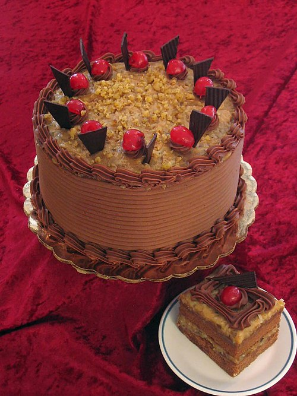

German Chocolate Cake
German chocolate cake, originally German's chocolate cake, is a layered chocolate cake filled and topped with a coconut-pecan frosting. Originating in the United States, it owes its name to an English-American chocolate maker named Samuel German, who developed a formulation of dark baking chocolate that came to be used in the cake recipe. It is not German by nationality. Sweet baking chocolate is traditionally used for the cake's flavor, but few recipes call for it today. The filling and/or topping is a custard made with egg yolks and evaporated milk; once the custard is cooked, coconut and pecans are stirred in.[1] Occasionally, a chocolate frosting is spread on the sides of the cake and piped around the circumference of the layers to hold in the filling. Maraschino cherries are occasionally added as a garnish..(from wikipedia)